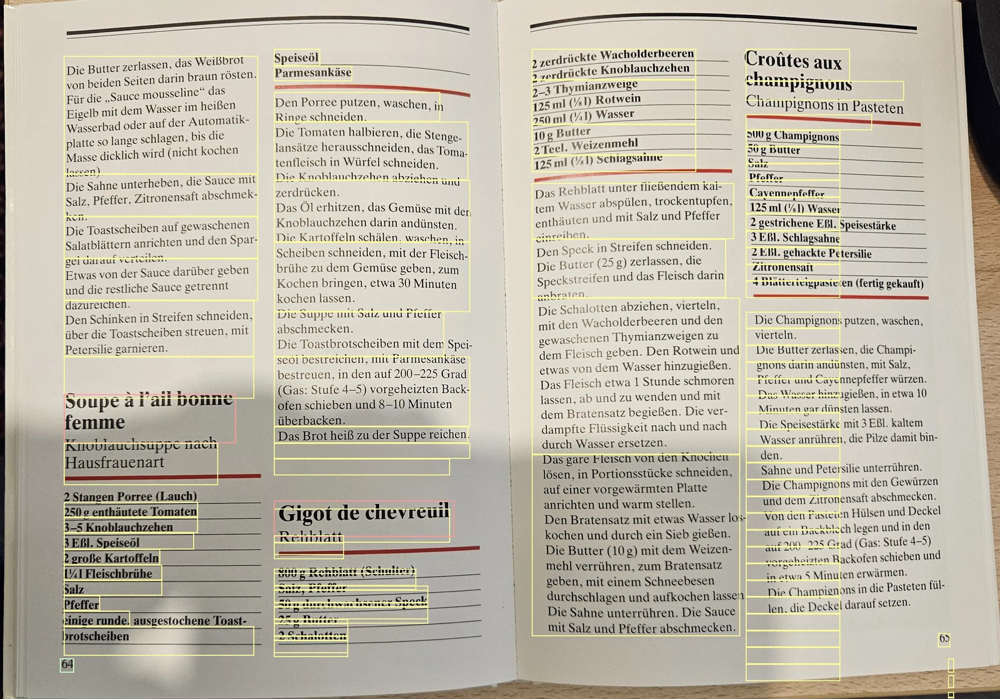
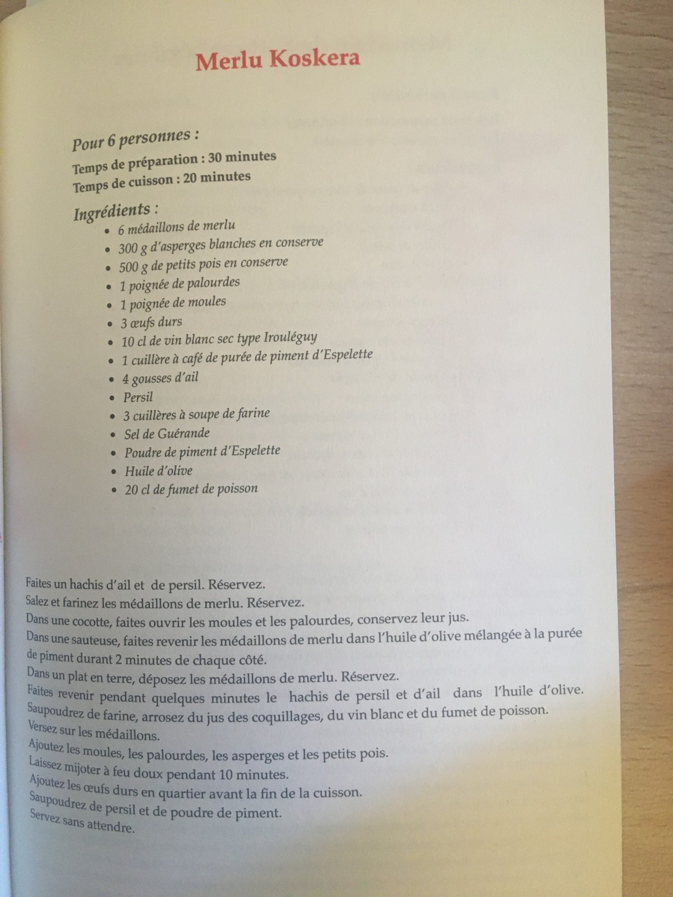

An OCR scan of a whole page of a complex layout can be done two ways. The easy expensive one using an LLM or the more sophisticated one, which is harder to develop but cheaper to run.
Author
Dominik Lindner
Published
October 24, 2025
1 Many ways lead to digitized documents
When I first started working on recipescanner, the biggest issue was scanning multi column pages and multi recipe pages. How to group the output from the OCR scan in such a way that recipes are not mixed with each other?
The following table shows different options of workflows, from image to fully parsed recipe.
Option
How it Works
Speed (per page)
Needs
Best When
Cost
1. OCR → LLM Parsing
Extract with OCR, LLM for classification
3–5 s (small LLM) 15–30 s (vision-LLM)
GPU or strong CPU, few GB RAM
Layouts are messy
Medium
2. Vision → Text (Donut / Pix2Struct)
End-to-end vision does classification
0.8–2 s on GPU
GPU / NNAPI required
Handwriting, warped images
High
3. OCR → Segmentation → Rules / Small Model
Extract with OCR, Rules or DecisionTree for classification
0.3 s on CPU
CPU only, ~400 MB RAM
Scans are clean and structured
Low
For pages with multiple recipes, the approach can be separated into two stages.
Image to Text Blocks and recipe sections
Classification of each recipe into ingredients, description, …
The division of the task into smaller tasks allows us to use less complex methods. In this notebook we focus on the task #1.
1.1 Using LLM API
Nowadays, one straightforward solution is to run an LLM on the OCR output and ask it to cluster the text. You can even set up a complete workflow: cluster the text, check it, extract ingredients and instructions and the check again to ensure all content is used recipes are not mixed up.
The downside about all this? It is expensive to run. Especially if we introduce correctness checks. How much more expensive?
For reference, Google currently charges $1.5 per 1000 pages, whereas as Mistral asks for $3 per 1000 pages for annotated output. Google’s new interface, which (like Mistral) relies on Vision Transformers also charges asks for $1.5 per 1000 pages. Layout parsing costs extra at $10 per 1000 pages.
Let’s say each of your users has about 2000 books he wants to convert. That results to $23 per user; and that is without classification. A custom extractor sets you back another $20. So the full workflow is about $50 per user. Again only for recipe extraction. Interaction with the recipe database will probably cost around $3 per month.
1.2 The new way: end-to-end conversion
I recently tested Docling, a transformer-based architecture. It has created quite a buzz recently.
Here is my short evaluation. On the document which we are going to use throughout this notebook, it failed. The deterministic demo (temperature=0) got stuck in an inference loop. I tried increasing temperature and add other tweaks to help the model escape local optima. This came at the cost of accuracy.
The model repeated titles as ingredients for other recipes and failed to stop properly.

Docling Result: one recipe title is not detected as such
The model has issue with line breaks: “Die Pilze damit bin-den” became “Pilze damit ben den” including line breaks.
On top of that, the speed was poor on a legacy GPU (GTX 1080), despite running at full load for the full time of 22 seconds! Memory consumption was steadily increasing as more tokens were decoded, just barely fitting on the 8GB GPU with 6.5GB max usage.
Reflecting on the architecture, I suspect it must work better on obscure edge cases. Complex Formats with overlaying figures or strongly nested tables could perform better.
Strangely, even the demo mostly showcases simple formats.
1.3 The not so easy way
Layout Parsing is not new. In fact, it became popular about three years ago.
One such layout parser is the actual LayoutParser. It combines an automatic analysis of OCR output and segmentation. Unfortunately, the segmentation is done with detecron2. The active development seems to have stopped and it no longer works on my python installation (Python 3.12). My research revealed Python 3.9 as the last working version.
A more recent model is DocLayout-YOLO. Based on the already massive YOLO dataset, it uses a very large document dataset to identify bounding boxes and classification in a combined loss function.
What it lacks, however, is an automatic connection to OCR. One can either crop and ocr the text boxes or align with the OCR output.
Here is an example:
Code
# Standard libraryimport globimport jsonimport osimport randomimport warningsfrom difflib import SequenceMatcherfrom pathlib import Path# Third-partyimport cv2import matplotlib.patches as patchesimport matplotlib.pyplot as pltimport numpy as npimport pandas as pdfrom PIL import Image, ImageDraw# Local / customfrom doclayout_yolo import YOLOv10from sklearn.metrics import accuracy_score# Jupyter magic%matplotlib inline# Suppress all warnings (optional)warnings.filterwarnings("ignore")
Code
model = YOLOv10("data/models/doclayout_yolo.pt")det_res = model.predict("data/raw/20250922_135514.jpg", imgsz=1024, conf=0.2, device="cuda:0", verbose=False)
Despite knowing nothing about the text, the CNN could still discover the layout. Which is clear, you don’t need to understand a language to break a book into paragraphs.
There are some errors in how the titles are handled. Bright red boxes highlight detected titles, and we can see that there are too many.
When we run the CUDA-enabled version, the total runtime is 164ms, 650ms for cold start, whereas on CPU it can take up to 1.6s.
1.4 Using only domain knowledge
And then there’s the domain knowledge approach. That is how I started. If we know all the text on a page, its location, and assume it’s a recipe: can we identify where recipes end, and which text belongs to which recipe?
In this notebook, I will examine this way and how it compares to DocLayout-YOLO.
2 Converting Data to Dataframes
We will perform a statistical analysis and therefore convert the data to pandas dataframes.
2.1 OCR
In my project, I currently rely on Google cloud OCR. Therefore, we need to convert the API response to a dataframe. While doing so, we also add information on font_size and word count.
In both cases, we can see that the title detection is not optimal. In the case of the block-based detection it will be difficult to separate “Soupe à l’ail bonne femme Knoblauchsuppe nach”.
For DocLayout-YOLO, there are too many titles. Ingredients were detected as title as they are on top of a column and in bold.
3 Title detection
3.1 Title detection using OCR
Let’s try to improve the title detection. We start with the OCR blocks.
df_block[["text","font_size"]]
text
font_size
1
64
24.000000
7
Die Butter zerlassen , das Weißbrot von beiden...
31.902913
10
Soupe à l'ail bonne femme Knoblauchsuppe nach ...
52.375000
16
2 Stangen Porree ( Lauch ) 250 g enthäutete To...
32.761905
19
Salz Pfeffer
26.500000
21
einige runde , ausgestochene Toast- brotscheiben
34.000000
24
Speiseöl Parmesankäse
29.500000
27
Den Porree putzen , waschen , in Ringe schneid...
35.600000
29
zerdrücken .
25.500000
34
Das Öl erhitzen , das Gemüse mit den Knoblauch...
33.516854
36
Gigot de chevreuil
62.000000
38
Rehblatt
37.000000
41
800 g Rehblatt ( Schulter ) Salz , Pfeffer 50 ...
34.187500
43
2 Schalotten
26.500000
49
2 zerdrückte Wacholderbeeren 2 zerdrückte Knob...
32.347826
51
2 Teel . Weizenmehl 125 ml ( 1 ) Schlagsahne
33.600000
56
Das Rehblatt unter fließendem kal- tem Wasser ...
33.964072
58
Croûtes aux champignons Champignons in Pasteten
45.666667
60
500 g Champignons 50 g Butter
33.500000
62
Salz Pfeffer
25.500000
69
Cayennepfeffer 125 ml ( 1 ) Wasser 2 gestriche...
32.321429
73
Die Champignons putzen , waschen , vierteln . ...
32.377193
75
55
-1.000000
77
65
26.000000
Titles are in index 10, 36, and 58. For index 10 and 58, the title is together with the subtitles. Both have a bigger average line height (fontsize) than the rest. Almost by factor 1.5. With this in mind we create our title detector. Just to be sure we limit the amount of words, too.
Luckily we extracted this information earlier in our dataframe.
In the case of blocks, the subtitle is detected with the title in a block. And in the case of the paragraphs, it has an almost equal font size. For the third title, separation is not possible on paragraph level.
Now it would be great to include this information back into the dataframe.
Luckily, the layout detector already flags which blocks are title. The issue: there is no text in any of those blocks. Most of the blocks span multiple lines, which means our font-size approach does not work. We do not know how many lines or words exist.
This is where DocLayout-YOLO falls short. We could run every single block through OCR. On a local OCR program that could be as effective as full page detection, maybe even better. But since we rely on Google OCR, that approach would lead to very high cost, as billing is per request.
Instead, we align the two boxes and copy every OCR word which falls in a Doclayout boxes to the related dataframe row.
As indicated earlier, we have different kind of false positives. Only the “Rehblatt” is similar to the previous case, of subtitles in the paragraph based detection. Luckily for us, this time font size should work well.
Now with the titles cleaned, we know the number of titles. Next step is the distribution of the rows of each dataframe to the recipes.
An important domain knowledge, or prior knowledge, is that almost all recipe formats are organized in columns. Titles are usually placed somewhere in these columns, and a title marks the beginning of a recipe.
The main drawback: any other layout format cannot be processed.
We will do this approach in two steps:
Split the text into columns based on the row’s bounding box
Split columns into recipes based on title position.
4.1 Working on OCR Block level
This was actually the hardest part. For the sake of brevity I only provide the final result and not the full way.
4.1.1 Column detection
The OCR pipeline has already discovered fragments of text that belong together, and organized them into paragraphs and blocks.
Our algorithm works with two approaches.
We assume there are no more than five columns, and they are evenly distributed. When column size is unequal, that is usually the case if ingredients are in a column.
We search for the best fit. Fit is defined by a score, which is the absolute distance of left beginning of the box and column centers.
We try to establish the number of columns with a normalized, area-weighted histogram. A valid column is defined by having 50% of the text amount of the maximum column. That of course assumes equal length of recipes. Because this assumption is shaky, the first approach is preferred.
def detect_columns(df, max_cols=5, error_threshold=20): page_width = df["x2"].max() best_n, best_score, best_assignments =1, float("inf"), Nonefor n_cols inrange(1, max_cols +1): col_width = page_width / n_cols col_centers = [(i +0.5) * col_width for i inrange(n_cols)]# Assign each block to nearest center assignments = [] errors = []for x in df["x1"]: dists = [abs(x - c) for c in col_centers] col_idx =int(np.argmin(dists)) assignments.append(col_idx) errors.append(min(dists)) score = np.mean(errors) # lower = better alignmentif score < best_score: best_score = score best_n = n_cols best_assignments = assignmentsif best_score < error_threshold: df["col_id"] = best_assignments col_boxes = []for col_id, group in df.groupby("col_id"): col_boxes.append({"col_id": col_id,"col_x1": group["x1"].min(),"col_y1": group["y1"].min(),"col_x2": group["x2"].max(),"col_y2": group["y2"].max() }) col_boxes = pd.DataFrame(col_boxes).sort_values("col_x1").reset_index(drop=True) col_boxes["col_id"] =range(len(col_boxes)) df["col_id"] = df["col_id"].map({old: new for new, old inenumerate(col_boxes["col_id"])})return col_boxes, dfelse:# Fallback to histogram based method df["area"] = (df["x2"] - df["x1"]) * (df["y2"] - df["y1"]) hist, bin_edges = np.histogram( df["x1"], bins=10, weights=df["area"] ) hist_norm = hist / np.max(hist) valid_bins = np.where(hist_norm >0.5)[0] bin_centers = (bin_edges[:-1] + bin_edges[1:]) /2 col_centers = bin_centers[valid_bins] df["col_id"] = df["x1"].apply(lambda x: np.argmin(np.abs(col_centers - x))) col_boxes = []for col_id, group in df.groupby("col_id"): col_boxes.append({"col_id": col_id,"col_x1": group["x1"].min(),"col_y1": group["y1"].min(),"col_x2": group["x2"].max(),"col_y2": group["y2"].max() }) col_boxes = pd.DataFrame(col_boxes).sort_values("col_x1").reset_index(drop=True) col_boxes["col_id"] =range(len(col_boxes)) df["col_id"] = df["col_id"].map({old: new for new, old inenumerate(col_boxes["col_id"])})return col_boxes, df
cols, df = detect_columns(df_block.copy())cols
col_id
col_x1
col_y1
col_x2
col_y2
0
0
853
484
1510
2355
1
1
1526
467
2138
2271
2
2
2306
474
2993
2249
3
3
2973
455
3608
2274
df[["text","col_id"]]
text
col_id
1
64
0
7
Die Butter zerlassen , das Weißbrot von beiden...
0
10
Soupe à l'ail bonne femme Knoblauchsuppe nach ...
0
16
2 Stangen Porree ( Lauch ) 250 g enthäutete To...
0
19
Salz Pfeffer
0
21
einige runde , ausgestochene Toast- brotscheiben
0
24
Speiseöl Parmesankäse
1
27
Den Porree putzen , waschen , in Ringe schneid...
1
29
zerdrücken .
1
34
Das Öl erhitzen , das Gemüse mit den Knoblauch...
1
36
Gigot de chevreuil
1
38
Rehblatt
1
41
800 g Rehblatt ( Schulter ) Salz , Pfeffer 50 ...
1
43
2 Schalotten
1
49
2 zerdrückte Wacholderbeeren 2 zerdrückte Knob...
2
51
2 Teel . Weizenmehl 125 ml ( 1 ) Schlagsahne
2
56
Das Rehblatt unter fließendem kal- tem Wasser ...
2
58
Croûtes aux champignons Champignons in Pasteten
3
60
500 g Champignons 50 g Butter
3
62
Salz Pfeffer
3
69
Cayennepfeffer 125 ml ( 1 ) Wasser 2 gestriche...
3
73
Die Champignons putzen , waschen , vierteln . ...
3
75
55
3
77
65
3
The number of columns is correct.
4.1.2 Recipe detection
We now proceed by grouping the blocks into recipes. This function is the work of many failed iterations.
Since we have established columns, we treat all text as if it were in one big column. Whenever a title appears, we start a new recipe.
I solved the subtitle issue by checking that the gap to the previous title is similar to the title font size. If so, it is a subtitle, not a new recipe.
def group_recipes(df, subtitle_factor=1.2): df = df.copy() recipe_id =-1 all_recipes = [] recipe_map = {}# Sort by column, then y cols =sorted(df["col_id"].unique()) last_recipe_id =None current_recipe = {"title": None, "blocks": []} last_title_font =Nonefor col in cols: col_blocks = df[df["col_id"] == col].sort_values("y1") last_title_bottom =-1for idx, row in col_blocks.iterrows():if row.is_title:# check if this title is actually a subtitle subtitle_gap = (last_title_font or row.font_size) * subtitle_factor is_subtitle = ( current_recipe["title"] isnotNoneand (row["y1"] - last_title_bottom) < subtitle_gap )if is_subtitle:# merge into current recipe title current_recipe["title"] +=" "+ row.text current_recipe["blocks"].append(row.text) recipe_map[idx] = last_recipe_idelse:if current_recipe["title"] isnotNone: all_recipes.append(current_recipe)# start new recipe recipe_id +=1 current_recipe = {"title": row.text, "blocks": [row.text]} recipe_map[idx] = recipe_id last_recipe_id = recipe_id last_title_bottom = row["y2"] last_title_font = row.font_sizeelse:if last_recipe_id isNone: recipe_map[idx] =-1# orphanelse: recipe_map[idx] = last_recipe_id current_recipe["blocks"].append(row.text)if current_recipe["title"] isnotNone: all_recipes.append(current_recipe) df["recipe_id"] = df.index.map(recipe_map).fillna(-1).astype(int)return df, all_recipes
df, recipes = group_recipes(df)
df[["text", "recipe_id"]]
text
recipe_id
1
64
0
7
Die Butter zerlassen , das Weißbrot von beiden...
-1
10
Soupe à l'ail bonne femme Knoblauchsuppe nach ...
0
16
2 Stangen Porree ( Lauch ) 250 g enthäutete To...
0
19
Salz Pfeffer
0
21
einige runde , ausgestochene Toast- brotscheiben
0
24
Speiseöl Parmesankäse
0
27
Den Porree putzen , waschen , in Ringe schneid...
0
29
zerdrücken .
0
34
Das Öl erhitzen , das Gemüse mit den Knoblauch...
0
36
Gigot de chevreuil
1
38
Rehblatt
1
41
800 g Rehblatt ( Schulter ) Salz , Pfeffer 50 ...
1
43
2 Schalotten
1
49
2 zerdrückte Wacholderbeeren 2 zerdrückte Knob...
1
51
2 Teel . Weizenmehl 125 ml ( 1 ) Schlagsahne
1
56
Das Rehblatt unter fließendem kal- tem Wasser ...
1
58
Croûtes aux champignons Champignons in Pasteten
2
60
500 g Champignons 50 g Butter
2
62
Salz Pfeffer
2
69
Cayennepfeffer 125 ml ( 1 ) Wasser 2 gestriche...
2
73
Die Champignons putzen , waschen , vierteln . ...
2
75
55
2
77
65
2
Nice, even the fragment of the previous recipe in the first column was treated correctly. Only the page number was wrongly attributed to the first recipe.
As we can see this approach also works quite well.
4.2 Working on OCR paragraph level
We will try OCR Paragraphs. Thanks to the subtitle workaround it also works for this recipe. However, doing so introduce another variable in the whole process and making it more brittle.
We can see that the first sub-title is printed in fat as the table still thinks it is a title.
[{'title': 'Ein würziger Schweinebraten aus der Normandie RÔTI DE PORC AUX POMMES CARAMÉLISÉES',
'blocks': ['Ein würziger Schweinebraten aus der Normandie RÔTI DE PORC',
'AUX POMMES CARAMÉLISÉES',
'SCHWEINEBRATEN MIT KARAMELLISIERTEN ÄPFELN',
'Wenig Rosmarinnadeln , die Salbeiblätter , Arbeitsaufwand : 30 Minuten die Knoblauchzehen und die Fenchelsamen im Mörser zerstoßen . Salz und Pfeffer zuge- ben . - Die Äpfel schälen , entkernen und in Schnitze schneiden . - Den Zucker mit dem Zitronensaft in einer Bratpfanne erhitzen . Sobald er hellbraun wird , die Äpfel zuge- ben , gut wenden , die Butter in Flocken zu- geben , mit 3 bis 5 EL Wasser ablöschen und ca. 5 Minuten garen . Salzen und pfeffern.- 3 bis 4 Einschnitte im Fleisch anbringen . Die Öffnungen mit der Gewürzmischung fül- len . Das Fleisch zu einem Rollbraten schnü- 2 dl Apfelwein ren , salzen und pfeffern . - Die Rosmarin-',
'Bratzeit : 2 Stunden Für 4 Personen 5 Zweige Rosmarin 2-3 Salbeiblätter 2 Knoblauchzehen 1 Prise Fenchelsamen Salz , Pfeffer',
'500 g säuerliche Äpfel 50g Rohzucker 1 EL Zitronensaft 2 EL frische Butter 1 kg magerer Schweinehals 2 EL zimmerwarme Bratbutter',
'zweige verteilt unter der Schnur anbringen . Das Fleisch mit der weichen Bratbutter bestreichen . In einer Bratkasserolle rundum an- braten . - Den Apfelwein zufügen und zugedeckt bei kleiner Hitze 2 Stunden garen . - Den Bratenfond mit 1 bis 2 EL Wasser aufkochen . 1/3 der Äpfel pürieren und mit dem Bratenjus gut mischen , abschme- cken . - Die restlichen Apfelschnitze rasch erwärmen und als Garni- tur zum tranchierten Braten servieren . Getränk : Rustikaler Rotwein , zum Beispiel aus der Provence Anmerkung : Diese ausgeprägten Zutaten passen auch gut zu Kalb- fleisch . Deshalb lässt sich nach demselben Rezept ebenso gut ein',
'Kalbsbratenzubereiten .']}]
This last layout is one of my favourites in terms of complexity. Triple title and a deeply nested format. The heuristic title detection with all the domain knowledge captures all the three titles together in the final extract. I’m looking forward, how this performs on completely unseen layouts.
5 Recipe detection using doc-layout YOLO
We already know title detection works better with the YOLO detector, but what about the columns and recipes?
Once again, we proceed in a two-step approach. First columns, then recipes.
5.1 Detecting columns
We use the previously defined function to find columns based on bounding box positions. At this stage, no text is required.
[{'title': " Soupe à l'ail bonne femme",
'blocks': [" Soupe à l'ail bonne femme",
' Knoblauchsuppe nach Hausfrauenart',
' 2 Stangen Porree ( Lauch ) 250 g enthäutete Tomaten 3-5 Knoblauchzehen 3 EBI . Speiseöl 2 große Kartoffeln 141 Fleischbrühe Salz Pfeffer einige runde , ausgestochene Toast- brotscheiben',
' 64',
' Speiseöl Parmesankäse',
' Den Porree putzen , waschen , in Ringe schneiden . Die Tomaten halbieren , die Stenge- lansätze herausschneiden , das Toma- tenfleisch in Würfel schneiden . Die Knoblauchzehen abziehen und zerdrücken . Das Öl erhitzen , das Gemüse mit den Knoblauchzehen darin andünsten . Die Kartoffeln schälen , waschen , in Scheiben schneiden , mit der Fleisch- brühe zu dem Gemüse geben , zum Kochen bringen , etwa 30 Minuten kochen lassen . Die Suppe mit Salz und Pfeffer abschmecken . Die Toastbrotscheiben mit dem Spei- seöl bestreichen , mit Parmesankäse bestreuen , in den auf 200-225 Grad ( Gas : Stufe 4-5 ) vorgeheizten Back- ofen schieben und 8-10 Minuten überbacken . Das Brot heiß zu der Suppe reichen .',
' Rehblatt']},
{'title': ' Gigot de chevreuil',
'blocks': [' Gigot de chevreuil',
' 800 g Rehblatt ( Schulter ) Salz , Pfeffer 50 g durchwachsener Speck 25 g Butter 2 Schalotten',
' zerdrückte Wacholderbeeren zerdrückte Knoblauchzehen 2-3 Thymianzweige 125 ml ( 1 ) Rotwein 250 ml ( 1 ) Wasser 10 g Butter 2 Teel . Weizenmehl 125 ml ( 1 ) Schlagsahne',
' Das Rehblatt unter fließendem kal- tem Wasser abspülen , trockentupfen , enthäuten und mit Salz und Pfeffer einreiben .',
' Den Speck in Streifen schneiden . Die Butter ( 25 g ) zerlassen , die Speckstreifen und das Fleisch darin anbraten .',
' Schalotten abziehen , vierteln , mit den Wacholderbeeren und den gewaschenen Thymianzweigen zu dem Fleisch geben . Den Rotwein und etwas von dem Wasser hinzugießen . Das Fleisch etwa 1 Stunde schmoren lassen , ab und zu wenden und mit dem Bratensatz begießen . Die ver- dampfte Flüssigkeit nach und nach durch Wasser ersetzen .',
' Fleisch von den Knochen Das gare lösen , in Portionsstücke schneiden , auf einer vorgewärmten Platte anrichten und warm stellen .',
' Den Bratensatz mit etwas Wasser los- kochen und durch ein Sieb gießen . Die Butter ( 10 g ) mit dem Weizen- mehl verrühren , zum Bratensatz geben , mit einem Schneebesen durchschlagen und aufkochen lassen . Die Sahne unterrühren . Die Sauce mit Salz und Pfeffer abschmecken .']},
{'title': ' Croûtes aux champignons',
'blocks': [' Croûtes aux champignons',
' Champignons in Pasteten',
' 500 g Champignons g Butter Salz Pfeffer Cayennepfeffer 125 ml ( 1 ) Wasser 2 gestrichene EBI . Speisestärke 3 EBI . Schlagsahne 2 EBI . gehackte Petersilie Zitronensaft 4 Blätterteigpasteten ( fertig gekauft )',
' Die Champignons putzen , waschen , vierteln .',
' Die Butter zerlassen , die Champi- gnons darin andünsten , mit Salz , Pfeffer und Cayennepfeffer würzen . Das Wasser hinzugießen , in etwa 10 Minuten gar dünsten lassen . Die Speisestärke mit 3 EBI . kaltem Wasser anrühren , die Pilze damit bin- den .',
' Sahne und Petersilie unterrühren . Die Champignons mit den Gewürzen und dem Zitronensaft abschmecken . Von den Pasteten Hülsen und Deckel auf ein Backblech legen und in den auf 200-225 Grad ( Gas : Stufe 4-5 ) vorgeheizten Backofen schieben und in etwa 5 Minuten erwärmen . Die Champignons in die Pasteten fül- len , die Deckel darauf setzen .',
' 65']}]
There is an issue with nested blocks: title “gigot de chevreuil” and “Rehblatt”. Somehow Rehblatt ended up in recipe 0.
5.2 Generalization of YOLO-doclayout+OCR
Again we check, how other recipes perform. This time we look at the dataframe.
unassigned words:
CPU times: user 354 ms, sys: 31.9 ms, total: 386 ms
Wall time: 386 ms
The OCR only approach is 20x faster, as we do not need to access the GPU. Without GPU it would take even more time.
6.2 Recipe output comparison
Let’s check if we discovered the same recipes. For that we try to realign the different rows and put the recipe ids of each approach on the ocr dataframe.
[{'title': 'Merlu Koskera',
'blocks': ['Merlu Koskera',
'Pour 6 personnes : Temps de préparation : 30 minutes Temps de cuisson : 20 minutes',
"Ingrédients : • 6 médaillons de merlu • 300 g d'asperges blanches en conserve • 500 g de petits pois en conserve • 1 poignée de palourdes • 1 poignée de moules ⚫ 3 œufs durs",
"• 10 cl de vin blanc sec type Irouléguy • 1 cuillère à café de purée de piment d'Espelette • 4 gousses d'ail",
'• Persil',
"• 3 cuillères à soupe de farine • Sel de Guérande • Poudre de piment d'Espelette",
"• Huile d'olive • 20 cl de fumet de poisson",
"Faites un hachis d'ail et de persil . Réservez . Salez et farinez les médaillons de merlu . Réservez . Dans une cocotte , faites ouvrir les moules et les palourdes , conservez leur jus . Dans une sauteuse , faites revenir les médaillons de merlu dans l'huile d'olive mélangée à la purée",
"de piment durant 2 minutes de chaque côté . Dans un plat en terre , déposez les médaillons de merlu . Réservez . Faites revenir pendant quelques minutes le hachis de persil et d'ail dans l'huile d'olive . Saupoudrez de farine , arrosez du jus des coquillages , du vin blanc et du fumet de poisson .",
'Versez sur les médaillons .',
'Ajoutez les moules , les palourdes , les asperges et les petits pois . Laissez mijoter à feu doux pendant 10 minutes . Ajoutez les œufs durs en quartier avant la fin de la cuisson . Saupoudrez de persil et de poudre de piment .',
'Servez sans attendre .']}]
r_yolo
[{'title': ' Merlu Koskera',
'blocks': [' Merlu Koskera',
' Pour 6 personnes : Temps de préparation : 30 minutes Temps de cuisson : 20 minutes',
' Ingrédients :',
" 6 médaillons de merlu 300 g d'asperges blanches en conserve • 500 g de petits pois en conserve • 1 poignée de palourdes • 1 poignée de moules ⚫ 3 œufs durs • 10 cl de vin blanc sec type Irouléguy • 1 cuillère à café de purée de piment d'Espelette • 4 gousses d'ail • Persil • 3 cuillères à soupe de farine • Sel de Guérande • Poudre de piment d'Espelette • Huile d'olive • 20 cl de fumet de poisson"]}]
We are missing text in the DocLayout-YOLO recipe. When we look at the input dataframe, we see there are two columns.
df_yolo[["text","col_id","recipe_id"]]
text
col_id
recipe_id
0
Faites un hachis d'ail et de persil . Réserve...
0
-1
1
6 médaillons de merlu 300 g d'asperges blanch...
1
0
2
Pour 6 personnes : Temps de préparation : 30 ...
1
0
3
Merlu Koskera
1
0
4
Ingrédients :
1
0
But when we look at the image there is only one.

skew image
A grain of salt: the shortcomings could be related to my optimization towards the heuristic approach.
7 Quantitative analysis
To evaluate the performance, I did define some reference data, with recipe title and the correct OCR block to recipe mapping.
withopen("data/ground-truth/ground-truth.json", "r", encoding="utf-8") as f: reference = json.load(f)reference_map = {page["page_id"]: page for page in reference["data"]}
['Merlu Koskera']
['Artichauts à la sauce vinaigrette Artischocken mit Vinaigrette ( Foto S. 63 )', 'Asperges ,, sauce mousseline❝ Spargel mit abgeschlagener Sauce', '2 EBI . steifgeschlagene Schlagsahne']
["Soupe à l'ail bonne femme Knoblauchsuppe nach Hausfrauenart", 'Gigot de chevreuil']
["Dinde pochée au lait d'amande , mange - tout et haricots", 'Info nutrition']
['Croquetas', 'Boudin noir sur Canapé']
['Lapin aux pruneaux']
["Soupe à l'ail bonne femme Knoblauchsuppe nach Hausfrauenart", 'Gigot de chevreuil', 'Croûtes aux champignons Champignons in Pasteten']
['Variantes', '92 PLATS FEEL GOOD']
['Salade de poulet , fèves , fenouil et concombre sur toasts']
['Ein würziger Schweinebraten aus der Normandie RÔTI DE PORC AUX POMMES CARAMÉLISÉES']
['Mulligatawny']
['Croûtes aux champignons Champignons in Pasteten']
df_metrics = pd.DataFrame( [{**{"page_id": pid}, **m} for pid, m in all_metrics])df_metrics
page_id
ocr_acc
ocr_title_accuracy
ocr_title_matches
ocr_num_pred_recipes
num_ref_recipes
0
IMG_2073
1.000000
1.000000
[(Merlu Koskera, Merlu Koskera, 1.0)]
1
1
1
20250922_135453
0.750000
0.000000
[(Artichauts à la sauce vinaigrette, Artichaut...
3
2
2
20250922_135507
1.000000
0.500000
[(Soupe à l'ail bonne femme, Soupe à l'ail bon...
2
2
3
IMG_2079
0.692308
1.000000
[(Dinde pochée au lait d'amande, mange - tout ...
2
1
4
20250922_213505
1.000000
1.000000
[(Croquetas, Croquetas, 1.0), (Boudin noir sur...
2
2
5
IMG_2078
1.000000
1.000000
[(Lapin aux pruneaux, Lapin aux pruneaux, 1.0)]
1
1
6
20250922_135514
0.916667
0.333333
[(Soupe à l'ail bonne femme, Soupe à l'ail bon...
3
3
7
IMG_2080
0.125000
0.000000
[(Gnocchi sans gluten à la patate douce et pes...
2
1
8
IMG_2077
1.000000
1.000000
[(Salade de poulet, fèves, fenouil et concombr...
1
1
9
IMG_2074
1.000000
0.000000
[(RÔTI DE PORC POMMES CARAMÉLISÉES, Ein würzig...
1
1
10
IMG_2076
1.000000
1.000000
[(Mulligatawny, Mulligatawny, 1.0)]
1
1
11
20250922_135510
1.000000
0.000000
[(Croûtes aux champignons, Croûtes aux champig...
1
1
In short, the algorithm is far from perfect.
Most errors result from incorrect titles. When the titles are wrong, to too many recipes are created.
8 Outlook
A few possible improvements include:
stabilizing titles with DocLayout-YOLO
using book-dependent settings adjusted based on user feedback
allowing manual user overrides
training a classifier solely on OCR data, but with much larger datasets
We’ll see how this evolves once it’s integrated into the main app.
Like this post? Get espresso-shot tips and slow-pour insights straight to your inbox.